· San Francisco Bay Area
Meteor M2-4:
From Signal to Image
A simple antenna, SDR and laptop captured weather images from orbit.
The satellite
Meteor M2-4 is a Russian weather satellite launched in February 2024. It circles Earth roughly every 101 minutes at about 820 km, passing near both poles. Its sun-synchronous orbit takes it across each latitude at roughly the same local time of day. From one spot, its signal can be received only during a short pass across the sky.
Its scanner, called MSU-MR, observes Earth in different types of light. Each type is recorded in a separate channel. Visible light shows reflected daylight; infrared channels reveal features the human eye cannot see.
The satellite sends some of these observations by radio. An antenna, receiver and decoding software make pictures from the received data.
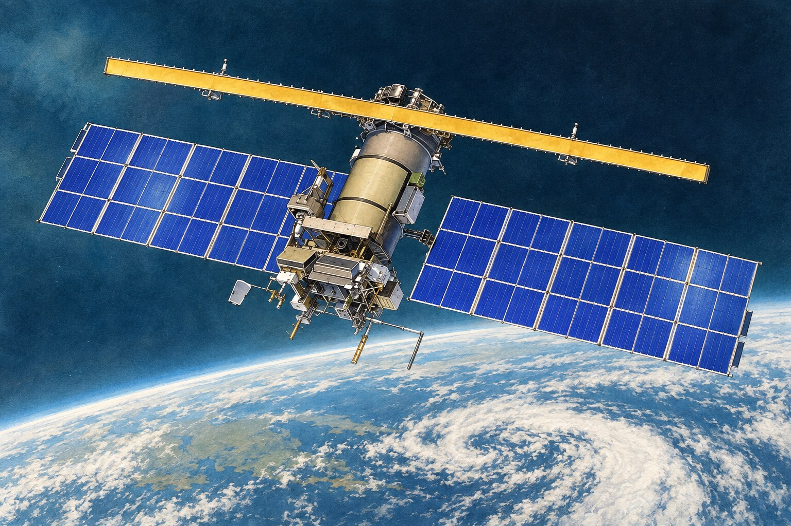
Technical note: orbit, instrument and radio link
{kind=link}
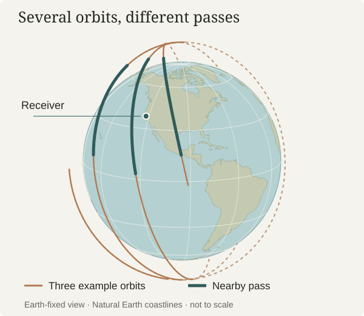
The orbit is near-polar and sun-synchronous: it passes a given latitude at roughly the same local solar time on each corresponding part of its orbit. MSU-MR is a six-channel scanning radiometer. This recording contains imagery from channels 1, 2 and 4.
The radio service is called LRPT (Low Rate Picture Transmission). Here it was received at 137.900 MHz. That frequency identifies where to tune the receiver, rather than the rate at which pictures arrive.
Specifications: WMO satellite record · WMO instrument record.
A simple setup, a short opportunity
I wondered whether I could receive a weather-satellite signal from my garden. After working out how to use the gear I had, I set up a V-shaped dipole antenna: two metal rods forming a wide V, held level on a camera tripod. A short antenna cable connected them to an SDRplay RSPdx-R2 receiver, which connected to the laptop by USB.
This is a software-defined radio, or SDR: the receiver captures the radio signal, while software on the computer handles much of the tuning, display and processing.
The nextpass program predicted a promising afternoon pass. I started recording at 3:41 p.m. The important choice was to save the radio signal itself, so I could try decoding it again later.
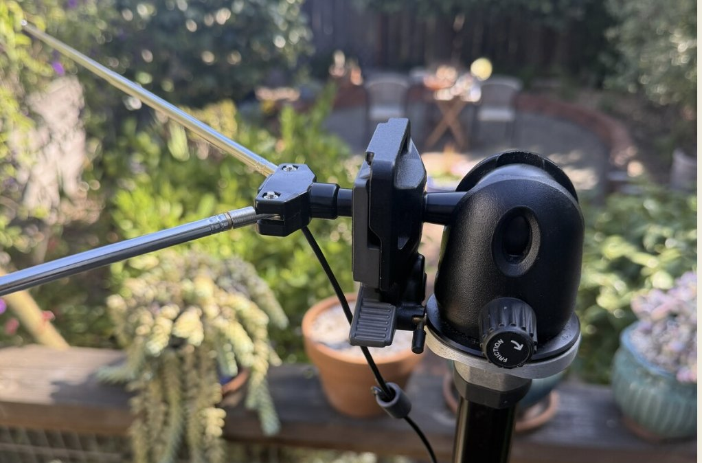
Setup details: antenna dimensions and connections
Each antenna arm was 53.4 cm long, with a 120° angle between the arms. Both lay parallel to the ground. The V opened toward the north.
The receiver sat about 30–40 cm below the antenna, keeping the thin coaxial cable short. USB continued to the laptop.
{kind=link}
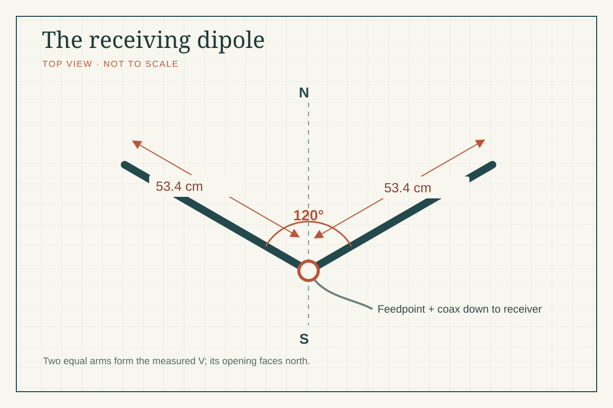
{kind=link}
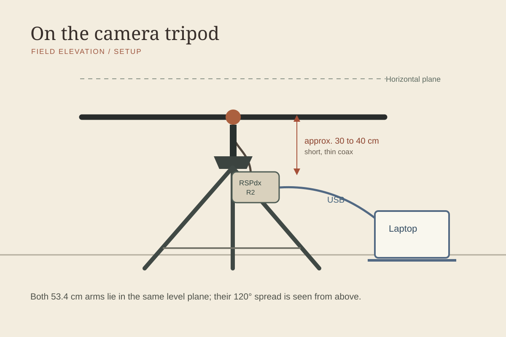
Following the pass
The satellite was expected to rise in the south, climb high in the sky, then head toward the north-northwest. Its predicted highest point was about 62° above the horizon near 3:49 p.m. For comparison, 90° would be directly overhead.
I recorded about 12 minutes of the pass and stopped before the satellite was predicted to disappear below the horizon. The signal faded partway through. A tall house along the path obstructed reception.
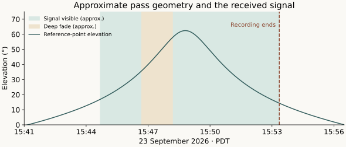
Prediction details: times, horizon and orbital data
The pass was predicted to rise near 3:41 p.m., peak near 3:49 p.m. and set near 3:56 p.m. These times use a clear 0° horizon; reception above 10° offers a shorter window.
The chart recalculates the pass from archived orbital data for a representative San Francisco point. It is not a signal-strength measurement or an exact plot for the receiving site. Signal and fade times are approximate. See the orbital-data notes.
{kind=link}
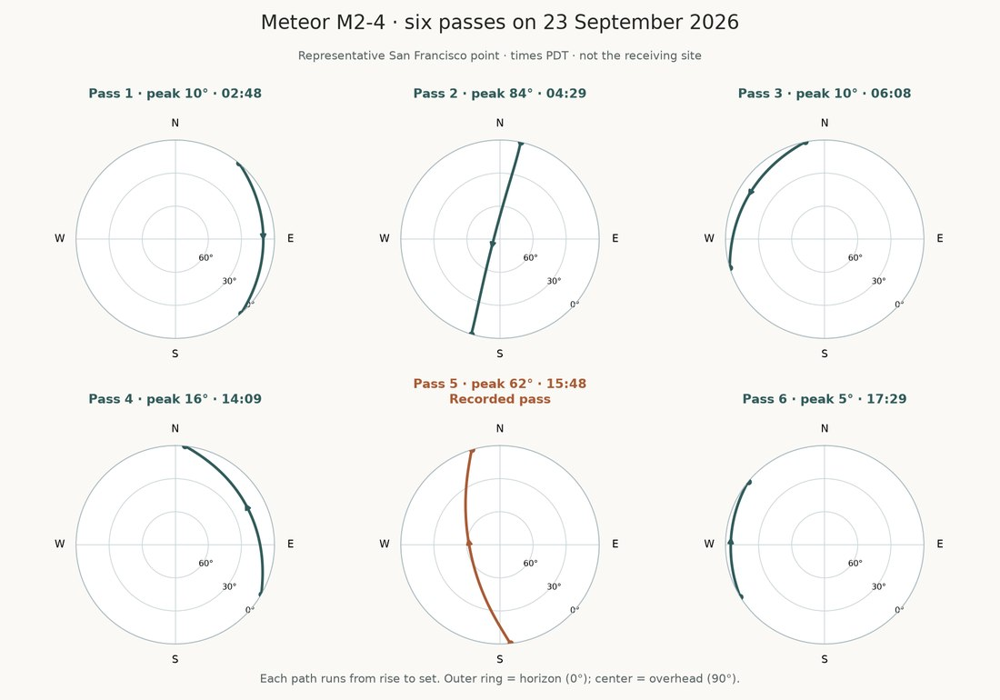
How a radio signal becomes a picture
The scanner builds its view one narrow strip at a time as the satellite moves over Earth. The satellite compresses the image information and sends it in small groups of data called packets, along with instrument status information called telemetry.
The receiver records the radio wave carrying those packets. SatDump, the decoding program, finds the signal, corrects recoverable errors and assembles the image pieces into rows. The satellite does not transmit ready-made PNG image files; the software creates those on the computer.
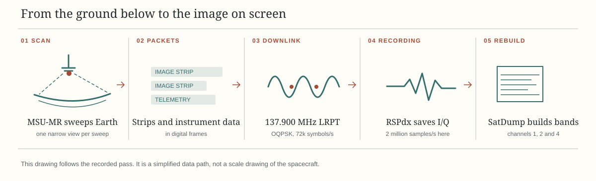
Signal details: samples, symbols and error correction
This LRPT transmission uses OQPSK (offset quadrature phase-shift keying), a way of encoding bits by changing the phase of a radio signal. Its rate is 72,000 symbols per second. A symbol is one modulation state used to carry information.
The receiver recorded two million complex samples per second. Each sample has two values, I and Q (in-phase and quadrature), which together preserve information about the radio wave’s amplitude and phase. This receiver sampling rate is different from the satellite’s symbol rate and from the image-pixel rate.
Viterbi and Reed–Solomon are error-correction methods used in decoding. Data is recovered in fixed-size blocks called frames. The saved CADU (Channel Access Data Unit) frames here are 1,024 bytes each; their data is then processed into image packets.
Watching the signal arrive
A waterfall is a picture of radio activity over time. Frequency runs across the horizontal axis, time runs up the vertical axis, and brighter colors show stronger received power.
The wide band near 137.9 MHz begins around 3½ minutes, fades at 5½–7 minutes, and is strongest at 7–10½ minutes.
The waterfall helped me spot the signal. The recovered images showed that the software had successfully read data from it.
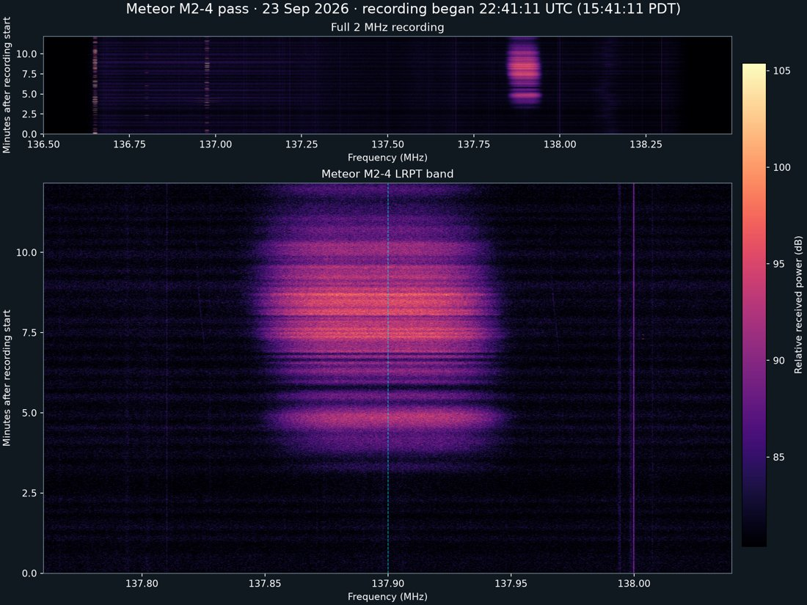
Receiver details: tuning, bandwidth and signal measurements
The receiver center was 137.500 MHz. Recording at 2 million complex samples/s with decimation 1 covered roughly 136.5–138.5 MHz. Meteor’s 137.900 MHz signal was 400 kHz above center; SatDump used a −400 kHz shift to move it to the decoding center.
No second downlink was seen at 137.100 MHz, although it was inside the recording. Persistent narrow features appeared near 136.65, 136.95 and 138.00 MHz. These are visual observations, not calibrated power measurements.
Decoder lock means the software has synchronized with the signal well enough to follow its structure. SNR means signal-to-noise ratio: how strong the wanted signal is relative to noise, expressed in decibels (dB). The saved logs contain snapshots, not a complete measurement over the pass. Compare the two decode records.
What came back from orbit
The recording produced three grayscale views: one in visible light and two in infrared. Each channel emphasizes different features. Compare the coastline and cloud patterns across the three images below.
Black horizontal bands mark image lines that were missing or unusable. Changing the colors or contrast cannot recover those measurements.
{kind=link}
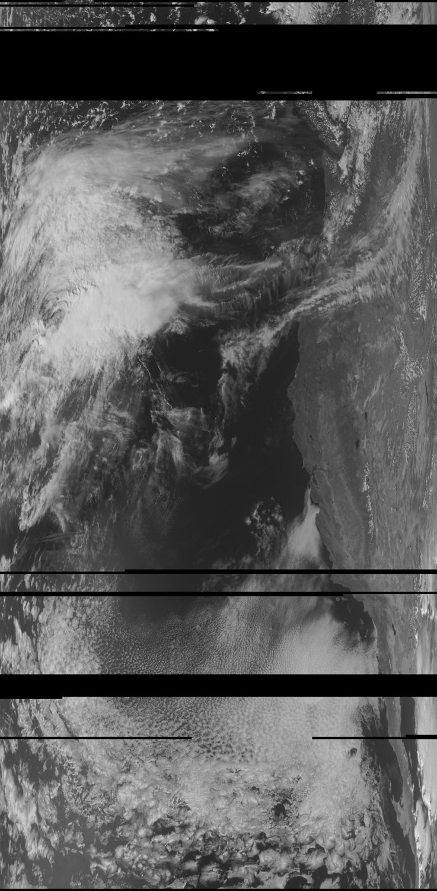
{kind=link}
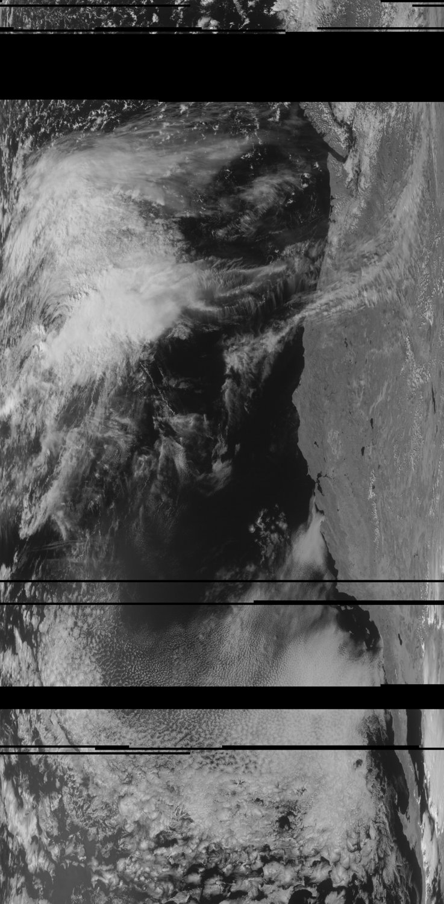
{kind=link}
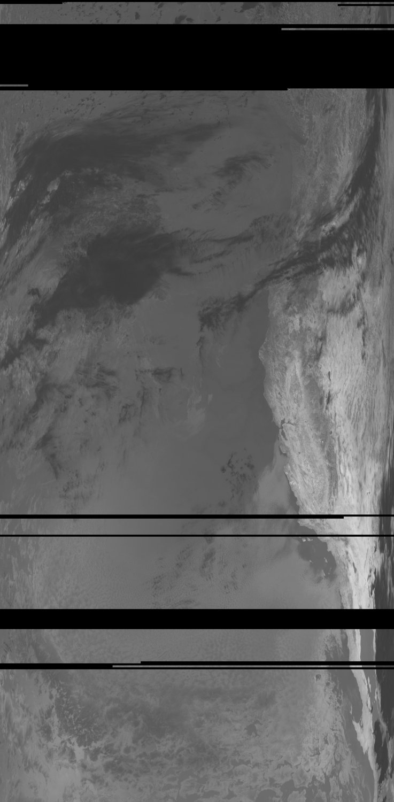
Giving the channels color
Assigning grayscale channels to the red, green and blue parts of a screen image creates color composites. The combinations below make differences easier to see. These are false-color images: the colors are chosen for display, rather than the colors a person would see from space.
{kind=link}
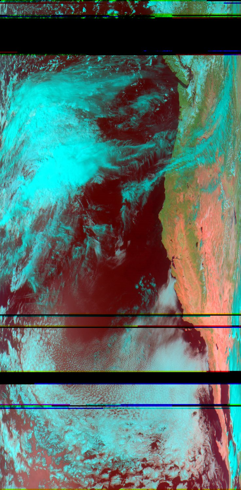

Finding familiar places
The mapped view below places the image along the western coast of North America. The Pacific is on the left and land is on the right.
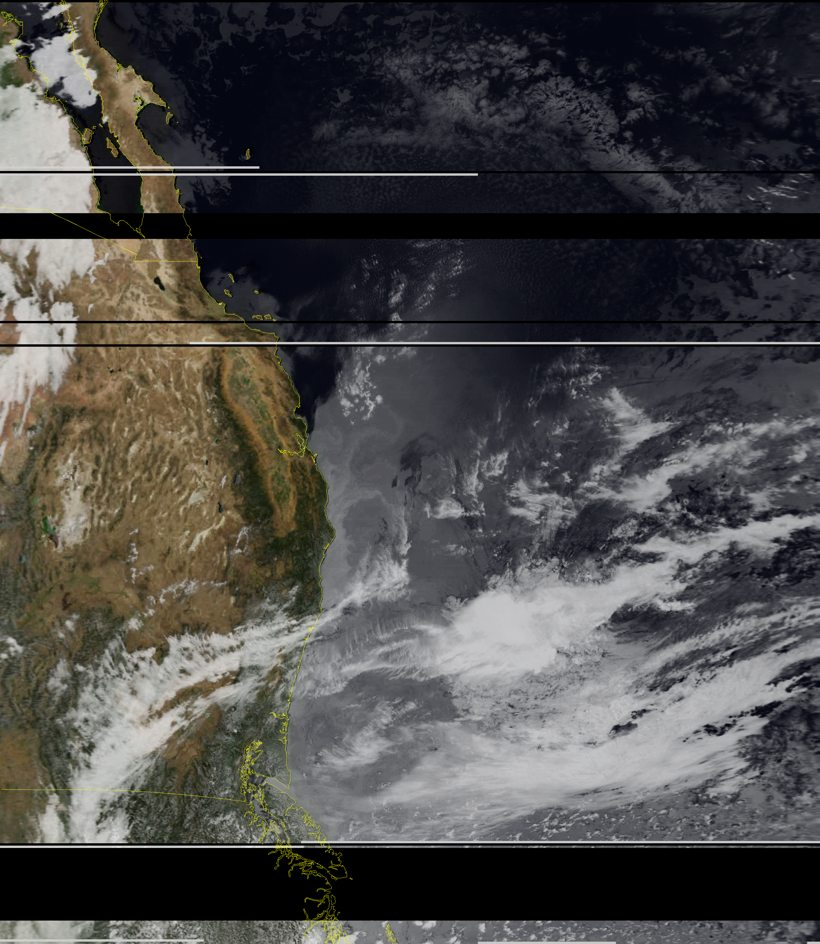
The infrared color view below highlights differences within channel 4. It is not a temperature map. Its colors represent adjusted image values, and daytime reflected sunlight also contributes to this channel.
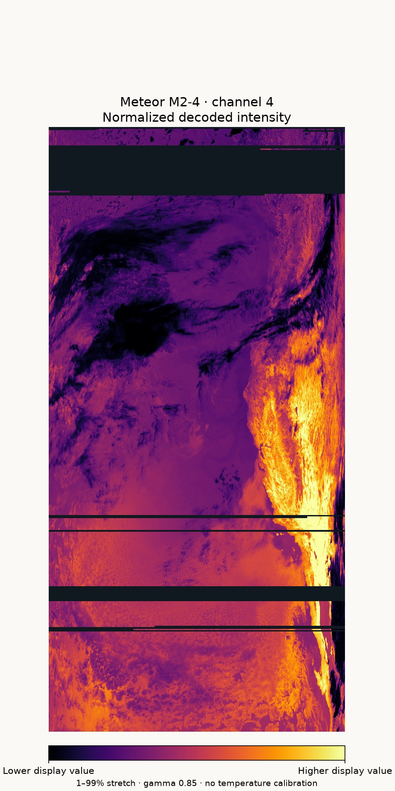
Image details: wavelengths, resolution and color processing
| Channel | Nominal center | Spectral interval |
|---|---|---|
| 1 · visible | 0.60 µm | 0.50–0.70 µm |
| 2 · near infrared | 0.90 µm | 0.70–1.10 µm |
| 4 · mid infrared | 3.80 µm | 3.50–4.10 µm |
Only channels 1, 2 and 4 were published. The table uses micrometers (µm) to describe the light each channel detects. No longwave thermal image is included, so these pictures are not temperature maps. Each grayscale image is 1,568 × 3,192 pixels; that does not mean every pixel covers the same area on the ground.
The color images combine channels and boost contrast for display. The newer channel 4 color figure has a documented recipe, but the original composites cannot be recreated exactly because their script is missing. Channels 1 and 4 match the saved sources after rotation; published channel 2 differs from its saved source for an unknown reason. Read the detailed image notes.
Data completeness: missing rows and the frame estimate
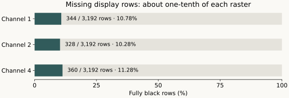
A simple estimate using 72,000 symbols/s OQPSK with rate-½ coding gives one 1,024-byte CADU about every 114 ms, or approximately 6,400 slots in 730 seconds. The original reported count of 3,796 is about 59% of that figure.
This is not a measured loss rate or reception efficiency. The original frame file is unavailable, and framing overhead, partial frames and time without decoder lock complicate the comparison. Fully black image rows are a different measure and do not include partial-row gaps.
The pass in one minute
Video details: length and speed
The 730.308-second recording is compressed into a 60-second, 1600 × 900 video at 20 frames/s, about 12.2 times normal speed. The sky track uses a representative San Francisco point, not the receiving site.
Trying it yourself
The basic process is to plan a pass, connect the antenna and receiver, record the signal, then decode it. SatDump handles recording and decoding; nextpass helps predict when the satellite will be visible from your location.
- Choose a pass. Enter your location in the prediction software and look for a path with a clear view of the sky.
- Set up the antenna. Keep both arms level and the connection clear of nearby metal. Use a short, supported antenna cable.
- Record the signal. Start before the predicted rise and continue through the pass. Save the raw radio recording so you can process it again.
- Decode and inspect. Use the Meteor M2-x LRPT option in SatDump. Check that it produced actual images and recovered data, then keep the recording, settings and logs together.
The settings below document this setup. Receiver gain—the amount of amplification—needs adjustment for your equipment and local interference.
Exact settings and commands
Plan the pass.
Run nextpass with your correct location, time zone and current orbital elements. High passes with an unobstructed path are easier. Its --all-passes option shows the low opportunities too, and --day-plot saves every track for one satellite.
nextpass --days 2 --satellites meteor
nextpass --date 2026-09-23 --days 1 --satellites M2-4 \
--all-passes --day-plot m2-4-day-passes.pngMount and connect.
Keep the arms symmetric and the feed point clear of nearby metal. Let the coax drop away from the center. With very thin coax, the SDR about 30 to 40 cm below the antenna kept the RF cable short and avoided an extra joint. Support the cable and protect the receiver from rain.
Record baseband I/Q.
| Receiver and app | SDRplay RSPdx-R2 with SatDump |
|---|---|
| RF input | Antenna A |
| Center frequency | 137.500 MHz |
| Sample rate | 2 Msps |
| Decimation | 1 |
| Gain | LNA 24; IF 40; AGC off (manual) |
| Notches and bias | FM notch on; DAB notch off; bias off |
| Recording | CS16 complex I/Q, about 8 MB/s at 2 Msps |
Start saving before rise and adjust gain for your own surroundings. Antenna A is the receiver’s selected RF input.
Decode with SatDump 1.2.2.
| Pipeline | METEOR M2-x LRPT 72k |
|---|---|
| Input level | Baseband |
| Baseband format | CS16 |
| Sample rate | 2 Msps |
| Frequency shift | −0.400 MHz (signal offset is +0.400 MHz above receiver center) |
| DC blocking | On |
| I/Q swap | Off |
| RS check | On |
| Satellite | M2-4 |
Choose a new output directory. After processing, open dataset.json in the SatDump Viewer and select MSU-MR. You can also open MSU-MR/product.cbor directly.
Keep the data; make the video.
Keep the original CS16 recording so it can be decoded again. iqscan 1.4.1 can make the waterfall video with SatDump. Use iqscan when installed, or ./scan.sh from a source checkout.
iqscan meteor \
/path/to/your-recording_2000000SPS_137500000Hz.cs16 \
--satellite M2-4 --frequency 137900000 --videoReading the settings: CS16 is the raw radio recording format; 2 Msps is its sampling rate. Decimation lowers that rate (1 means no reduction). LNA, IF and AGC control gain; notches filter interference; bias powers an antenna accessory. DC blocking, I/Q swap and RS check are decoder options. See the full glossary and settings.
Keep “fill missing” off to preserve the received gaps. Check the decoded files after every run: one later attempt reported success but recovered no frames.
Files, sources and technical record
The published images, original notes and later saved decode do not all come from the same processing run. The notes below explain which results can be checked against saved files. The original radio recording remains in a separate archive.
How the two decodes differ
The first notes give frame, telemetry and signal figures, but the matching files are missing, so those numbers cannot be checked against source files. A later saved decode has its own log and recovered frames. Its results confirm that later run, not the earlier figures. See the exact numbers and sources.
Telemetry is instrument status. A field labelled “Channel 5” does not mean a fifth image was recovered.
Full recording and software record
| Recording | 2026-09-23_22-41-11_2000000SPS_137500000Hz.cs16 |
|---|---|
| Format and duration | Signed 16-bit interleaved I/Q, 2,000,000 complex samples/s, 730.308 s, 5,842,464,768 bytes |
| Signal and center | 137.900 MHz LRPT; 137.500 MHz SDR center; −0.400 MHz decode shift |
| Receiver and software | SDRplay RSPdx-R2, Antenna A; SatDump for recording, SatDump 1.2.2 for successful offline decoding; iqscan 1.4.1 for scan and video; nextpass for orbit prediction; macOS on Apple M3 Pro (exact macOS version not recorded) |
| Decoder result | Original notes: 3,796 frames and 349 telemetry records. Archived later run: synchronized decoder, 3,851 frames and 356 telemetry records. Published imagery contains bands 1, 2 and 4. |
| Decoder SNR | Original notes: 8.03 / 13.41 dB (log unavailable). Later log: 13.46 / 14.08 dB snapshot / peak-so-far; no complete time series. |
| Image size | 1,568 × 3,192 pixels per grayscale band |
| Observing area | San Francisco Bay Area; exact receiving site withheld |
| Orbital elements | NORAD 59051. Original nextpass summary: epoch 23 September 2026, 07:26:39 UTC (exact elements unavailable). Recomputed curve: archived later-product TLE, epoch 23 September 2026, 22:38:16.87 UTC. |
Evidence and reproducibility
Evidence guide · IQ checksum and source manifest · Later decode log excerpt · Later telemetry · Later orbital elements · Measured black-row counts · Figure generation script
Technical references: SatDump 1.2.2 · Meteor LRPT pipeline · SDRplay Hardware API · WMO MSU-MR entry · detailed notes (Markdown plain text).